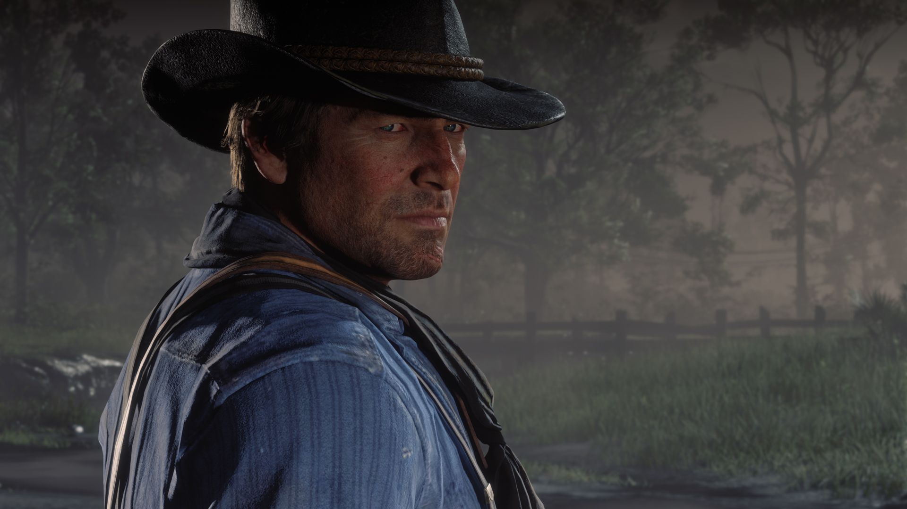
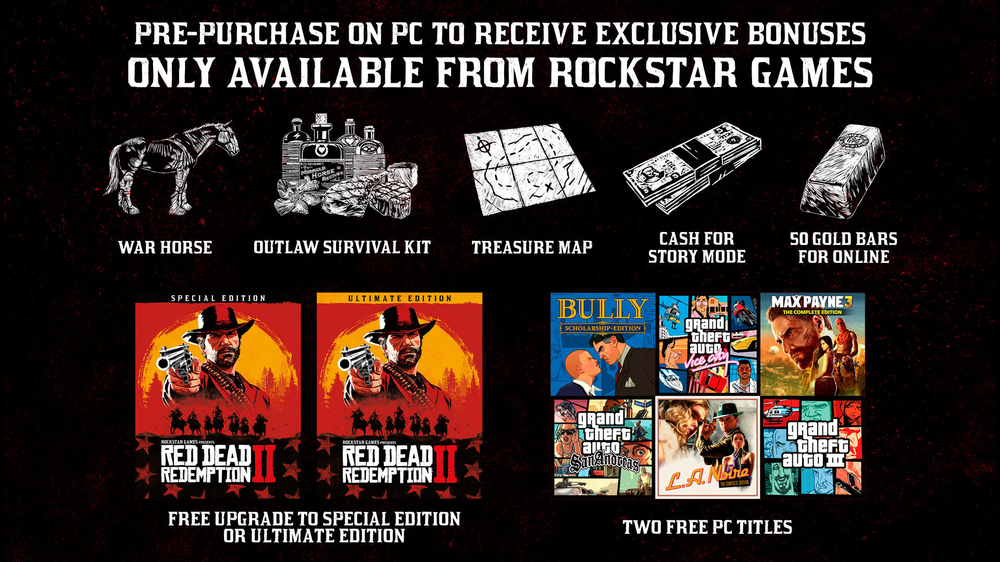

Red Dead Redemption 2 arrivera sur PC le 5 novembre. Vous pouvez pré-acheter le jeu dès aujourd'hui, exclusivement via le Rockstar Games Launcher. Plusieurs ajouts et de nombreuses améliorations techniques, graphiques et de performances rendront l'épopée de la bande d'Arthur Morgan et de Dutch Van Der Linde dans Red Dead Redemption 2 sur PC plus épique que jamais. Voici les premières images à couper le souffle et quelques détails supplémentaires concernant la version PC.
 Dès aujourd'hui et jusqu'au 22 octobre, pré-achetez Red Dead Redemption 2 sur PC en exclusivité via le Rockstar Games Launcher et profitez de bonus exceptionnels, notamment deux jeux classiques de Rockstar Games sur PC offerts à choisir parmi :